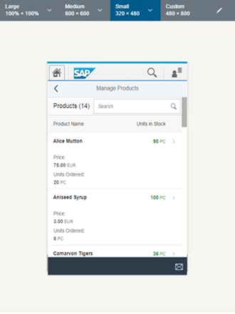

Step 3: Extending the Worklist Table
In this step, we will edit the worklist table to include additional columns for our manage product stocks scenario. We display the supplier, the product price, and the number of units on order for each product and format the values accordingly.
You can view and download all files in the Demo Kit at Worklist App - Step 3.
webapp/view/Worklist.view.xml
…
<Table
id="table"
busyIndicatorDelay="{worklistView>/tableBusyDelay}"
class="sapUiResponsiveMargin"
growing="true"
growingScrollToLoad="true"
noDataText="{worklistView>/tableNoDataText}"
updateFinished="onUpdateFinished"
width="auto"
items="{
path: '/Products',
sorter: {
path: 'ProductName',
descending: false
},
parameters: {
'expand': 'Supplier'
}
}">
…
We want to display the supplier’s company name in a separate column in the table for each product. Therefore, we extend the items aggregation of the table with an expand parameter for the Supplier entity. With this, the supplier data will be already included in the service request for the products.
We expand the supplier because we want to avoid sending one additional request for each product to get the supplier. Furthermore, this allows us to bind directly to {Supplier/CompanyName} later.
OData’s “expand” Mechanism:
OData $expand is very helpful when combining data from different service entities. Instead of having to send an additional service request for the second entity, we simply expand the service call to include the second entity as well – similar to a join in a relational database. Have a look at the local service metadata definition file webapp/localService/metadata.xml that represents the interface of our service. In the metadata you can see a list of entities that are available in this service, for example Products and Suppliers. Each entity lists a number of fields that we can bind to the properties of our view.
<?xml version="1.0" encoding="utf-8" standalone="yes"?>
<edmx:Edmx Version="1.0" xmlns:edmx="http://schemas.microsoft.com/ado/2007/06/edmx">
<edmx:DataServices xmlns:m="http://schemas.microsoft.com/ado/2007/08/dataservices/metadata" m:DataServiceVersion="1.0">
<Schema Namespace="NorthwindModel" xmlns:m="http://schemas.microsoft.com/ado/2007/08/dataservices/metadata" xmlns="http://schemas.microsoft.com/ado/2008/09/edm">
<EntityType Name="Product">
<Key>
<PropertyRef Name="ProductID" />
</Key>
<Property Name="ProductID" Type="Edm.Int32" Nullable="false" p8:StoreGeneratedPattern="Identity" xmlns:p8="http://schemas.microsoft.com/ado/2009/02/edm/annotation" />
<Property Name="ProductName" Type="Edm.String" Nullable="false" MaxLength="40" Unicode="true" FixedLength="false" />
<Property Name="SupplierID" Type="Edm.Int32" Nullable="true" />
<Property Name="UnitPrice" Type="Edm.Decimal" Nullable="true" Precision="19" Scale="4" />
<Property Name="UnitsInStock" Type="Edm.Int16" Nullable="true" />
<Property Name="UnitsOnOrder" Type="Edm.Int16" Nullable="true" />
<Property Name="Discontinued" Type="Edm.Boolean" Nullable="false" />
<NavigationProperty Name="Supplier" Relationship="NorthwindModel.FK_Products_Suppliers" FromRole="Products" ToRole="Suppliers" />
</EntityType>
<EntityType Name="Supplier">
<Key>
<PropertyRef Name="SupplierID" />
</Key>
<Property Name="SupplierID" Type="Edm.Int32" Nullable="false" p8:StoreGeneratedPattern="Identity" xmlns:p8="http://schemas.microsoft.com/ado/2009/02/edm/annotation" />
<Property Name="CompanyName" Type="Edm.String" Nullable="false" MaxLength="40" Unicode="true" FixedLength="false" />
<Property Name="ContactName" Type="Edm.String" Nullable="true" MaxLength="30" Unicode="true" FixedLength="false" />
<Property Name="ContactTitle" Type="Edm.String" Nullable="true" MaxLength="30" Unicode="true" FixedLength="false" />
<Property Name="Address" Type="Edm.String" Nullable="true" MaxLength="60" Unicode="true" FixedLength="false" />
<Property Name="City" Type="Edm.String" Nullable="true" MaxLength="15" Unicode="true" FixedLength="false" />
<Property Name="Region" Type="Edm.String" Nullable="true" MaxLength="15" Unicode="true" FixedLength="false" />
<Property Name="PostalCode" Type="Edm.String" Nullable="true" MaxLength="10" Unicode="true" FixedLength="false" />
<Property Name="Country" Type="Edm.String" Nullable="true" MaxLength="15" Unicode="true" FixedLength="false" />
<NavigationProperty Name="Products" Relationship="NorthwindModel.FK_Products_Suppliers" FromRole="Suppliers" ToRole="Products" />
</EntityType>
<Association Name="FK_Products_Suppliers">
<End Role="Suppliers" Type="NorthwindModel.Supplier" Multiplicity="0..1" />
<End Role="Products" Type="NorthwindModel.Product" Multiplicity="*" />
<ReferentialConstraint>
<Principal Role="Suppliers">
<PropertyRef Name="SupplierID" />
</Principal>
<Dependent Role="Products">
<PropertyRef Name="SupplierID" />
</Dependent>
</ReferentialConstraint>
</Association>
</Schema>
<Schema Namespace="ODataWeb.Northwind.Model" xmlns:m="http://schemas.microsoft.com/ado/2007/08/dataservices/metadata" xmlns="http://schemas.microsoft.com/ado/2008/09/edm">
<EntityContainer Name="NorthwindEntities" p7:LazyLoadingEnabled="true" m:IsDefaultEntityContainer="true" xmlns:p7="http://schemas.microsoft.com/ado/2009/02/edm/annotation">
<EntitySet Name="Products" EntityType="NorthwindModel.Product" />
<EntitySet Name="Suppliers" EntityType="NorthwindModel.Supplier" />
<AssociationSet Name="FK_Products_Suppliers" Association="NorthwindModel.FK_Products_Suppliers">
<End Role="Suppliers" EntitySet="Suppliers" />
<End Role="Products" EntitySet="Products" />
</AssociationSet>
</EntityContainer>
</Schema>
</edmx:DataServices>
</edmx:Edmx>In the entity Products, you can see that an additional relation to the Supplier is available as a NavigationProperty. A navigation property links two entities of an OData service and assigns the supplier to the product here.
When using a real OData service, the interface would be available by calling the service URL directly in a browser (e.g. http://services.odata.org/V3/Northwind/Northwind.svc/$metadata for the Northwind OData test service). In our app project we use local mock data and serve the data with the mock server instead.
webapp/view/Worklist.view.xml
…
<columns>
<Column id="nameColumn">
<Text
id="nameColumnTitle"
text="{i18n>TableNameColumnTitle}"/>
</Column>
<Column
id="supplierNameColumn"
demandPopin="false"
minScreenWidth="Tablet">
<Text text="{i18n>TableSupplierColumnTitle}"/>
</Column>
<Column
id="unitPriceColumn"
hAlign="End"
demandPopin="true"
minScreenWidth="Tablet">
<Text text="{i18n>TablePriceColumnTitle}"/>
</Column>
<Column id="unitsOnOrderColumn"
demandPopin="true"
minScreenWidth="Tablet"
hAlign="End">
<Text text="{i18n>TableUnitsOrderedColumnTitle}"/>
</Column>
<Column id="unitsInStockColumn"
hAlign="End">
<Text text="{i18n>TableUnitsInStockColumnTitle}"/>
</Column>
</columns>
…Next, we change the column definitions of the table. We define the new columns and update the existing ones in the columns aggregation of the table according to the code above (i.e. just copy and paste the highlighted content into your columns aggregation).
The column definitions include a text that we will later define in the resource bundle (i18n model – a short name for internationalization) so that the column titles can be translated to other languages. And we will define additional settings for text alignment and making the table responsive. Some columns are not as important as others and can be displayed below the main columns (popin) on devices with small or medium-sized screens.
-
Product Name
The product name is the first column and it is always visible on any device.
-
Supplier
Each product has a supplier. This column contains the company name of the supplier supplying the product. On small screen devices like smart phones we hide this column as we do not have much screen space for a table.
-
Price
The currency of the product’s unit price is Euro (EUR). We are talking about stock levels in this app, so the number of units is most interesting for us - not their price. Price is still good to know, so it is not entirely removed. However, this field is not as important as the unit fields and will popin on smart phones.
-
Units on Order
This column shows the units that have been ordered already for this product and will be added to the stock shortly. In other words, this is the number of items ordered, but not yet received. A shortage for a product can easily be resolved by reordering the product in advance (we add this feature later). This field will popin on smart phone devices.
-
Units in Stock
The column contains the product’s stock units currently available for sale. This field is the most important column for our manage product stocks app. Therefore, this column is visible for all devices and it’s visible without a popin. Later, we will use this column to visualize a stock status for the specific products so that attention will be drawn to any stock issues with the products.
webapp/model/formatter.js
sap.ui.define([ "sap/ui/core/ValueState" ], function(ValueState) { "use strict"; return { numberUnit: function(sValue) { … }, /** * Defines a value state based on the stock level * * @public * @param {number} iValue the stock level of a product * @returns {string} sValue the state for the stock level */ quantityState: function(iValue) { if (iValue === 0) { return ValueState.Error; } else if (iValue <= 10) { return ValueState.Warning; } else { return ValueState.Success; } } } };
Our table has a column that will contain the units in stock for each product. It would be nice to visualize the corresponding numbers so that we can point out important information to the users, such as a shortage. We want to visualize the numbers by using a specific ValueState depending on the units in stock. This can be achieved by a simple formatter, which we will use later.
-
A totally depleted stock (0 pieces remaining) will return a semantic Error state that will color the text in the units in stock field red.
-
Very low stock (10 or less pieces remaining) will lead to a Warning state (orange).
-
A stock of more than 10 items will convert to Success (green)
webapp/view/Worklist.view.xml
…
<items>
<ColumnListItem
press="onPress"
type="Navigation">
<cells>
<ObjectIdentifier
title="{ProductName}"/>
<Text text = "{Supplier/CompanyName}"/>
<ObjectNumber
unit="EUR"
number="{
path: 'UnitPrice',
formatter: '.formatter.numberUnit'
}"/>
<ObjectNumber
number="{UnitsOnOrder}"
unit="PC"/>
<ObjectNumber
number="{UnitsInStock}"
unit="PC"
state="{
path: 'UnitsInStock',
formatter: '.formatter.quantityState'
}"/>
</cells>
</ColumnListItem>
</items>
…-
The first cell simply displays the ProductName property of the corresponding entity by using an ObjectIdentifier control.
-
The Supplier cell of each row is a simple sap.m.Text control. Its text property is bound to Supplier/CompanyName. This references the property CompanyName of the entity’s NavigationProperty Supplier. This NavigationProperty will be expanded automatically; we configured this earlier in this step.
-
The Price cell uses an sap.m.ObjectNumber control and a custom formatter. You can find the formatter’s implementation in the webapp/model/formatter.js file. The unit property is not bound and hard coded to “EUR” as the currency is not part of the model for our app. The units on order are displayed with a sap.m.ObjectNumber control as well, but without additional formatting. Its unit property is hard coded to PC, which is the short form for "pieces".
-
The last cell shows the units in stock and was already specified in the previous step. We would like to use this field to show an additional status based on the stock level so we change the binding syntax to an object notation and add an additional formatter quantityState. We implemented this formatter in the previous code block above.
The formatter functions used in this XML view are loaded by the controller and thus can be accessed relatively to the controller through the property name .formatter. This logic is already part of the initial app.
webapp/i18n/i18n.properties
#XTIT: The title of the column containing Product name
TableProductColumnTitle=Product
#XTIT: The title of the column containing Supplier name
TableSupplierColumnTitle=Supplier
#XTIT: The title of the column containing Price
TablePriceColumnTitle=Price
#XTIT: The title of the column containing Ordered Units
TableUnitsOrderedColumnTitle=Units Ordered
#XTIT: The title of the column containing Units in Stock
TableUnitsInStockColumnTitle=Units in Stock
#XBLI: text for a table with no data
tableNoDataText=No products are currently available
...The webapp/i18n/i18n.properties file contains some annotations for each key in the file. These annotations offer some more context which can help translators to better interpret the semantics of the text belonging to the keys. An example for such an annotation is XTIT in the i18n.properties file above, which tells that the corresponding key is supposed to be used as a title. The guidelines at https://github.com/SAP/openui5/blob/master/docs/guidelines/translationfiles.md give you a better idea of how this can be used. Be aware that this is how SAP uses the annotations internally. In case you want to use this approach to work with your own translators make sure to discuss about a common set of allowed annotations that everybody understands.
Testing the Responsiveness of the App
-
Testing the responsiveness with the SAP Web IDE
SAP Web IDE can simulate different screen sizes. You just have to make sure that the run configuration is set up correctly:-
In SAP Web IDE, choose
 Run
Run  New Configuration
New Configuration
-
Select the Run with MockServer configuration.
-
In the Frame screen area, select the Open with frame checkbox.
If you create a new project this option is switched on by default. For apps created based on the Worklist template, however, this option is switched off to make it easier to debug the application coding.
-
Save the configuration and close the dialog.
Switch, for example from Medium to Small, and you will see that the table behaves as expected.
Figure 2: Testing the responsiveness in SAP Web IDE -
-
Testing the responsiveness using the Developer Tools of Google Chrome
If you use the Google Chrome browser, you can also use its great developer tools to test the responsiveness of your app.-
Call the app and open the developer tools in Chrome with F12
-
Choose the Toggle device mode icon.
-
Now choose from the different devices in the Models field, and observe the behavior of your app.
-